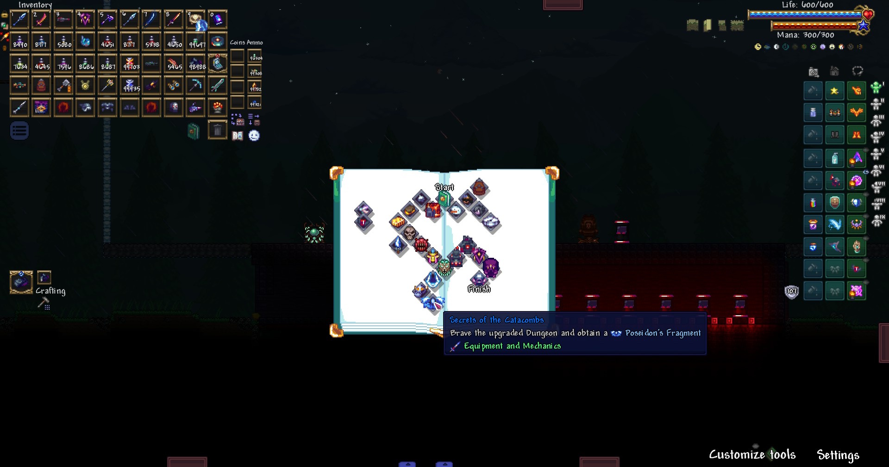
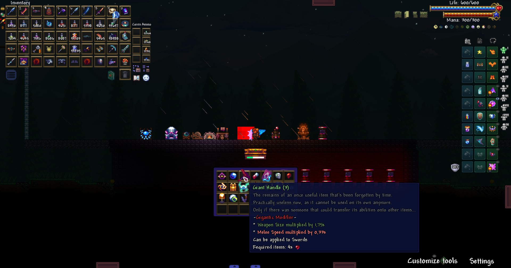
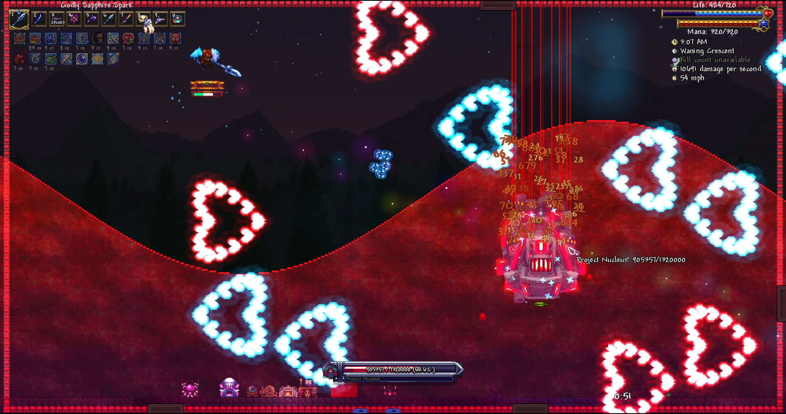
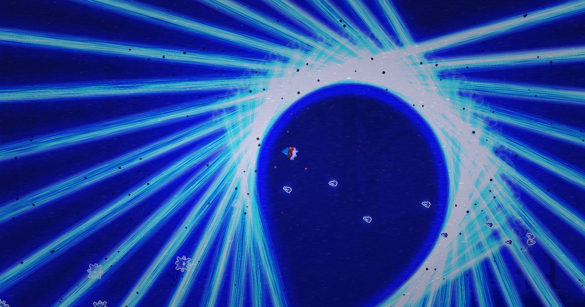
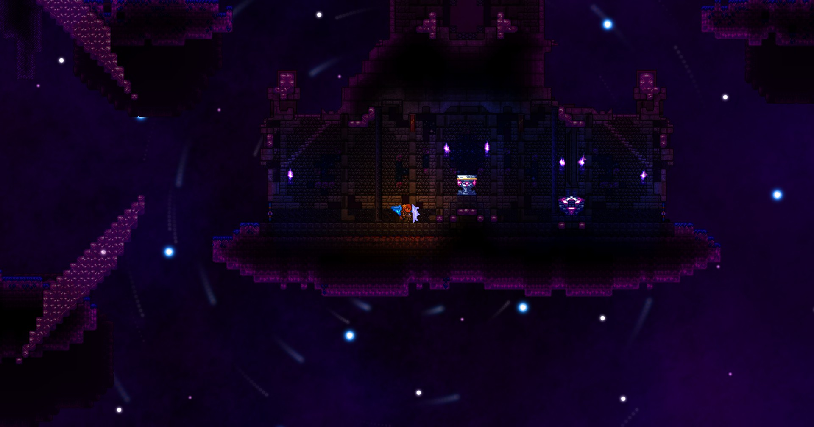
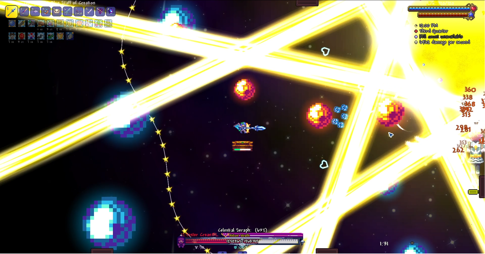
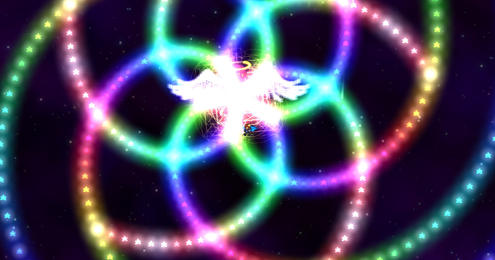
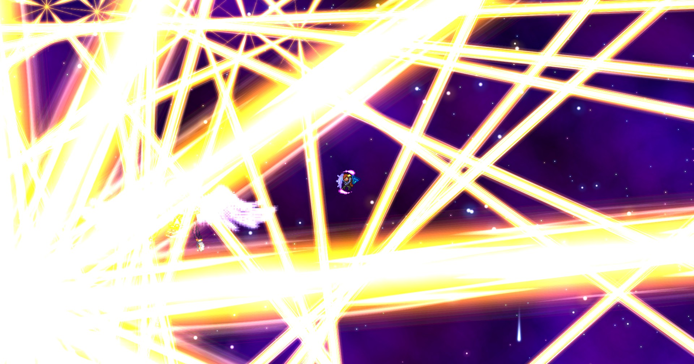

A Terraria 1.4.4 content mod for tModloader
GITHUB LINK
A mod that I started developing in 2022.
Estimated release: Late 2026
The 1.0 version will contain:
◈⠈◦.°⚝ Plenty of Unique Weapons and Accessories
◈⠈◦.°⚝ 4 New Bosses and 1 Mini-Boss
★ Frost Serpent, a Post-Moonlord Worm Boss fought in the Tundra.
★ Atmospheron, a Post-Moonlord Boss capable of bending the sky to it's will.
★ Project Nucleus, a Pre-Celestial Seraph Boss. The final component of the mechanical reconstruction of Cthulhu.
★ Celestial Seraph, the Highest of Angels. Tasked with monitoring the Terrarian after the defeat of Wall of Flesh.
◈⠈◦.°⚝ Unique Mechanics
★ Parrying
★ Modifiers
★ Custom Achievement Tree inspired by various Minecraft Mods
◈⠈◦.°⚝ 3 New Vendors:
★ The Blacksmith, capable of applying modifiers and upgrades to items.
★ The Cosmic Archmage, capable of doing cosmic magic and selling space-related items.
★ The Snowman, found in the Ice Biome. Sells snow and winter themed items. Scared of the snowman mafia.
◈⠈◦.°⚝ 2 New Biomes:
★ Lower Heaven
★ The Volcanic Layer
◈⠈◦.°⚝ Several Landmarks:
★ The Cosmic Fields. A large, open field with no hostile enemies and lots of treasure located under Lower Heaven. Perfect for fighting bosses and gearing up earlygame.
★ Cosmic Cathedral. Contains the Celestial Altar, which can take you to the Seraph's pocket dimension.
★ The Snowman's house, houses a vendor NPC. Found in the ice biome.







